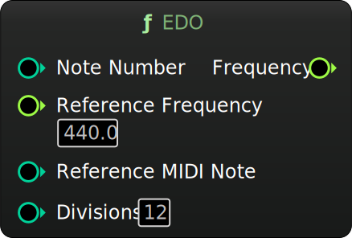

MetaSound Branches
EDO
Category: Tuning
Generate frequencies for tuning systems using equally divided octaves (float) with a MIDI note input. Set a reference frequency and reference MIDI note (defaults to A440).
Inputs
| Name | Description | Type |
|---|---|---|
| Note Number | Input MIDI note number (integer). | Int32 |
| Reference Frequency | Reference frequency (float). | Float |
| Reference MIDI Note | Reference MIDI note (integer). | Int32 |
| Divisions | Number of divisions of the octave (integer). | Int32 |
Outputs
| Name | Description | Type |
|---|---|---|
| Frequency | Output frequency (float). | Float |
Charles Matthews 2024